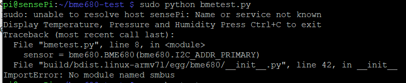
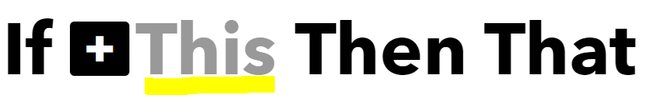
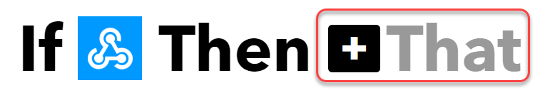
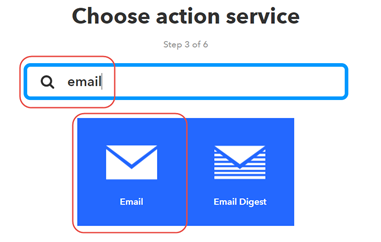
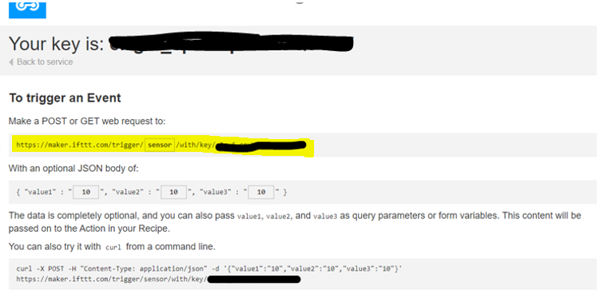
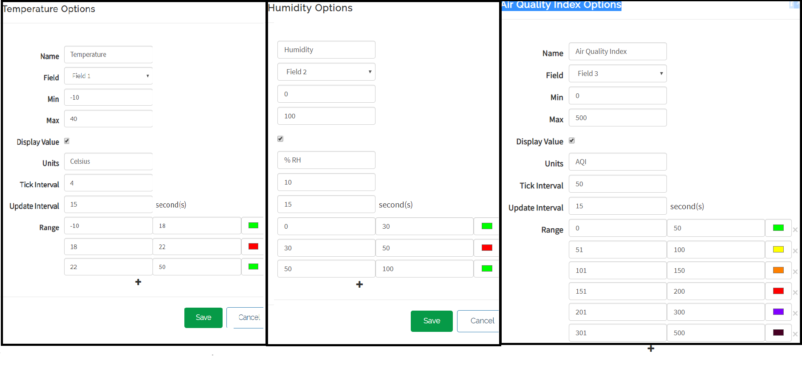
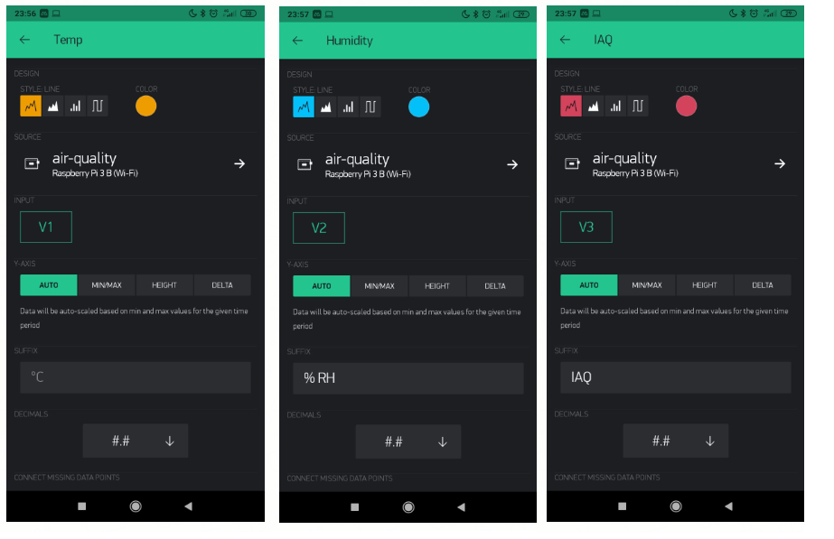

Setup the project
Raspberry Pi 3B
- Download 7-Zip (windows)
- Download Etcher
- Download Rasbian buster lite
- Download Putty
- Download Notepad++
- Using 7-zip unzip the Raspbian buster lite image
- Put the MicroSD card into the computers card reader
- Open Etcher and select the Rasbian buster lite image file that was just downloaded.
- Select the SD card you want to write the image to.
- Click the Flash button and wait for the write to finish.
- Open the MicroSD drive from the computer.
- Inside the boot partition create an empty file called ssh
- Inside the boot partition create a file called wpa_supplicant.conf using Notepad++ and enter the following into this file (replace the SSID and PSK with your own WIFI SSID and PSK):
country=IE
ctrl_interface=DIR=/var/run/wpa_supplicant GROUP=netdev
pdate_config=1
network={
scan_ssid=1
ssid="YOUR SSID"
psk="YOUR PSK"
key_mgmt=WPA-PSK
}
nmap -sn 192.168.8.0/24
pi
raspberry
you can change these in the raspi-config utility
Connect the BME680 sensor to the Raspberry Pi B3
- Using the Jumper wires connect the BME680 sensor to the Raspberry Pi connecting pins
- 3.3V (RPi) -> 3.3V (BME680)
- gnd (RPi) -> gnd (BME680)
- SDA1 (RPi) -> SDA (BME680)
- SCL1 (RPi) -> SCL (BME680)
- Turn the power to your Raspberry Pi back on
- Once the bootup is finished as we did previously connect to The Raspberry Pi via SSH Putty.
- Clone and install the BME680 python library using the following commands
$ git clone https://github.com/pimoroni/bme680-python.git $ cd bme680-python/library $ sudo python setup.py install $ cd ~
ImportError: No module named smbus
$ sudo pip install smbus
$ sudo raspi-config

$ sudo reboot
$ sudo i2cdetect -y 1 $ sudo /usr/sbin/i2cdetect -y 1
IFTTT
- Register an account with IFTTT
- In the navigation menu click on the profile symbol and select Create
- Click on This 
- In the Search bar type in webhooks
- Click on Receive a web request
- Enter an Event Name: asthma_sensor
- Click on +That 
- In the search box enter email and select Email 
- Click on Send me an email
- Fill in the emails action fields (subject and body) as in the image below and click the create action button
- Review and finish.
- Copy the Make a POST or GET web request to URL 


ThingSpeak
- Register an account with ThingSpeak
-
Create a new channel called air-quality

-
like in the diagram above create 3 fields
- Field 1 - temperature
- Field 2 - humidity
- Field 3 - Indoor Air Quality
- Save the channel
- For each Field add a gauge
- Add widget
- Click on the Gauge Image
- And set up the settings as in the below diagrams for each field. 
- On the main menu click on Apps and then MATLAB Analysis
- Click the New button to create a new MATLAB Analysis
- Enter Trigger Email from IFTTT as the Name
- In the MATLAB pre section add the following pre:
% Read the values in from Indoor Air Quality for the last 24 hours % Send an email via the IFTTT service with the daily averages % Store the channel ID for the Indoor Air Quality channel. % Substitute with your own channelID channelID = ** ; % trigger url from IFTTT. ftttURL = ' PASTE THE IFTTT URL YOU COPIED EARLIER IN HERE '; % Read API Key: % Substitute your ThingSpeak API Key here readAPIKey = '*'; % Read the 24 hours of moisture data from ThingSpeak. temperature = thingSpeakRead(channelID,'NumDays',1,'Fields',1,'ReadKey',readAPIKey); humidity = thingSpeakRead(channelID,'NumDays',1,'Fields',2,'ReadKey',readAPIKey); iaq = thingSpeakRead(channelID,'NumDays',1,'Fields',3,'ReadKey',readAPIKey); % Calculate average values of temperature, humidity and indoor air quality avgTemp = mean(temperature, 'omitnan'); avgTemp = round(avgTemp,2); avgHum = mean(humidity, 'omitnan'); avgHum = round(avgHum,2); avgIaq = mean(iaq, 'omitnan'); avgIaq = round(avgIaq,2); % send the email webwrite(iftttURL,'value1',avgTemp,'value2',avgHum,'value3',avgIaq);

Blynk
- Using your Smartphone download the Blynk App
- Create a new account
- Create a new project
- Name: Air Quality
- Choose Raspberry Pi 3
- Set up 3 gauges:
- For each one click on the + symbol

- From the menu select Gauge

- Click on the Gauge's that have been created on the dashboard and set up each gauge like the diagram
below.
- One Gauge for Temperature (V1)
- One for Humidity (V2)
- One for Index Air Quality (V3)
- For each one click on the + symbol
- Set up 1 Super chart
- Click on the + symbol
- Select SuperChart from the menu

- Setup the SuperChart the same as the settings in the diagram below

- For each of the Datastreams (Temp, Humidity, IAQ) click on the small
side menu option

- For each one set them up like the diagram below 
- Click on the + symbol
- To setup eventors to send Blynk notification reminders to take asthma medication/Inhaler
- click on the plus symbol again
- Select Eventor from the menu

- Click the add new event button
- setup 2 events with the details the same as the diagram below

- click on the plus symbol again
Setup Blynk on Raspberry Pi 3
- Connect to the Raspberry Pi via SSH and login
- Check if you have node installed on the Raspberry by entering the command
$ node -V
$ sudo apt-get purge node nodejs node.js -y $ sudo apt-get autoremove
sudo su cd /opt wget https://nodejs.org/dist/v6.9.5/node-v6.9.5-linux-armv6l.tar.gz -O - | tar -xz mv node-v6.9.5-linux-armv6l nodejs apt-get update && apt-get upgrade apt-get install build-essential ln -s /opt/nodejs/bin/node /usr/bin/node ln -s /opt/nodejs/bin/node /usr/bin/nodejs ln -s /opt/nodejs/bin/npm /usr/bin/npm exit export PATH=$PATH:/opt/nodejs/bin/
sudo npm install blynk-library --save
Setup environmental variables
- Retrieve your Blynk Auth Token from the email they sent you.
- Retrieve your ThingSpeak Write API Key from your ThingSpeak Channel

- Connect to the Raspberry Pi via SSH and login
- Enter the following commands and substitute your Thingspeak API key and Blynk Authentication key in
$ cd ~/
$ nano .bash_profile
export THINGSPEAK_WRITE_API= 'YOUR API KEY HERE'
export BLYNK_AUTH= 'YOUR AUTH CODE HERE'
CTRL+X and y to save
Clone project
- Make a new directory and clone the project
$git clone https://github.com/sarahbarron/Asthma-Trigger-Monitor.git
Run program
- Add the MAC addresses for your smartphone into the Asthma-Trigger-Monitor/AsthmaTriggerSettings/settings.json file
- To run the start menu
$ cd Asthma-Trigger-Monitor
$ ./startmenu.sh
- 1. START SENSOR - this starts the sensor transmitting temperature, humidity and IAQ data to IoT platforms Blynk and Thingspeak.
- 2. View sensor settings - allows you view the current range settings.
- 3. Setup main settings - Allows you change the default settings for the ranges you want to receive notifications for
- 4. Setup Temperature Range - Allows you change the default settings for the temperature range.
- 5. Setup Humidity Range - Allows you change the default settings for the Humidity range.
- 6. Setup IAQ Range - Allows you change the default settings for the IAQ range.
- 7. Setup Remote Access - Allows you enter y or n to indicate if you do or do not have remote access to devices.
- 8. Reset settings to default settings - Resets the ranges back to the default ranges of temperature (18-21 degrees Celsius), humidity (30-50% RH), Index Air Quality(0-100 IAQ).
- Quit - allows you quit the program